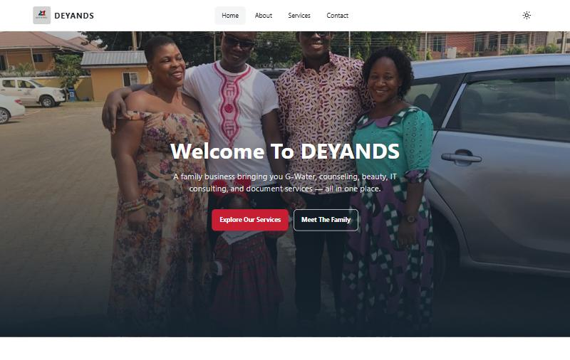
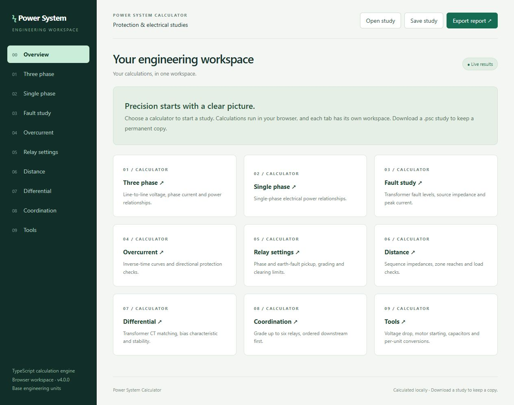

Business websites
Fast, mobile-first sites with your services, photos, location and one-tap WhatsApp and call buttons.
I'm Nana Kwame Yiadom Boachie, a power systems protection engineer at GRIDCo and a web developer in Accra. I build websites with Mobile Money payments for Ghanaian businesses, and practical software for engineering teams.
The same care that keeps a transmission grid protected goes into every site and tool I ship: tested, reliable and easy to use.
Fast, mobile-first sites with your services, photos, location and one-tap WhatsApp and call buttons.
Online ordering that accepts MTN MoMo, Telecel Cash, AirtelTigo Money and cards through Paystack or Hubtel.
Calculators, dashboards and data tools for power and utility teams, built by a practising protection engineer.
A client website and the engineering tools I build for my own field.

Website for a Ghanaian family business offering G-Water bottled water, counseling, beauty, IT consulting and document services.

A browser-based engineering calculator for power, fault, protection and coordination studies, with live results and graphical relay characteristics.
.psc study filesTook part in installing and configuring Phasor Measurement Units and Phasor Data Concentrators across 10 GRIDCo substations, adding real-time monitoring and data collection for grid stability.
Led protection system upgrades for critical transmission infrastructure, designing new schemes that cut outage response time by 30%.
Redesigned the corporate network across operational sites, improving data throughput and reducing latency.
Tell me about your business or the tool your team needs. I usually reply the same day.